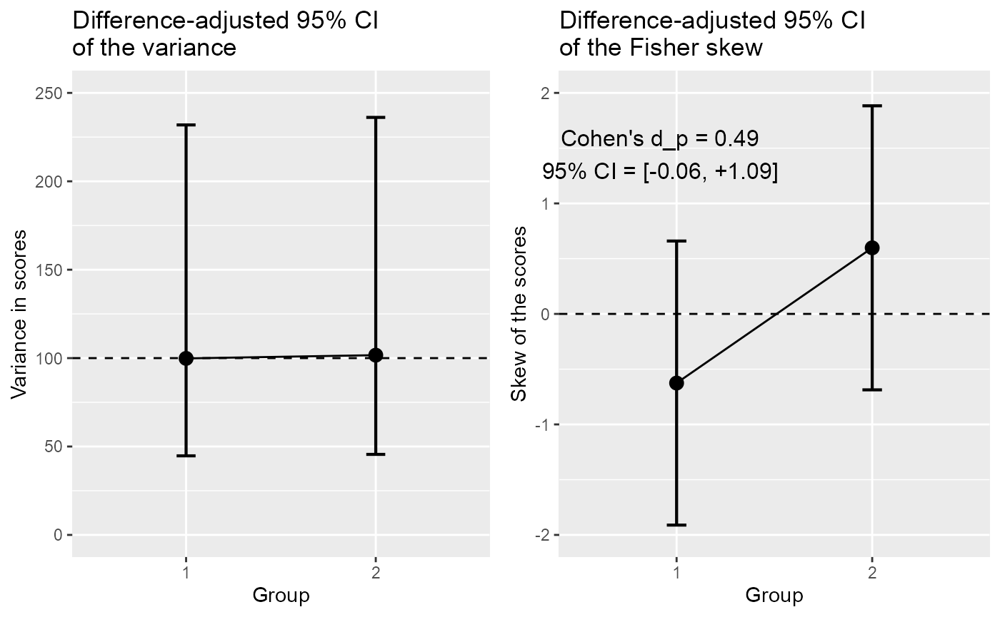
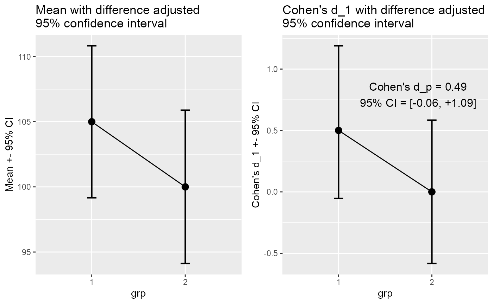

TheMakingOf.RmdHerein we provide the full code to realize Figures 1 to 6 that illustrate the (submitted) article describing the superb framework. These figures are based on ficticious data sets that are provided with the package superb (dataFigure1 to dataFigure4).
Before we begin, we need to load a few packages, including superb of course:
## Load relevant packages
library(superb) # for superbPlot
library(ggplot2) # for all the graph directives
library(grid) # for grid.arrange
library(gridExtra) # for grid.textIf they are not present on your computer, first upload them to your computer with install.packages("name of the package").
The purpose of Figure 1 is to illustrate the difference in error bars when the purpose of these measures of precision is to perform pair-wise comparisons. It is based on the data from dataFigure1, whose columns are
head(dataFigure1)## id grp score
## 1 1 1 117
## 2 2 1 103
## 3 3 1 113
## 4 4 1 101
## 5 5 1 104
## 6 6 1 114where id is just a participant identifier, grp indicate group membership (here only group 1 and group 2), and finally, score is the dependent variable.
The first panel on the left is based on stand-alone confidence intervals and is obtained with :
plt1a = superbPlot(dataFigure1,
BSFactors = "grp",
variables = "score",
plotStyle = "line" )
plt1aFigure 1a: Making left panel of Figure 1.
Note that these stand-alone error bars could have been obtained by adding the argument adjustments=list(purpose = "single") but as it is the default value, it can be omitted.
The default theme to ggplots is not very attractive. Let’s decorate the plot a bit! To that end, I collected some additional ggplot directives in a list:
ornateBS = list(
xlab("Group"),
ylab("Attitude towards class activities"),
scale_x_discrete(labels=c("Collaborative\ngames", "Unstructured\nactivities")), #new!
coord_cartesian( ylim = c(75,125) ),
geom_hline(yintercept = 100, colour = "black", size = 0.5, linetype=2),
theme_light(base_size = 14) +
theme( plot.subtitle = element_text(size=12))
)so that the first plot, with these ornaments and a title, is:
plt1a <- plt1a + ornateBS + labs(subtitle="(stand-alone)\n95% CI")
plt1aFigure 1b: Decorating left panel of Figure 1.
The second plot is obtained in a simar fashion with just one additional argument requesting difference-adjusted confidence intervals:
plt1b = superbPlot(dataFigure1,
BSFactors = "grp",
variables = "score",
adjustments = list(purpose = "difference"), #new!
plotStyle = "line" )
plt1b <- plt1b + ornateBS + labs(subtitle="Difference-adjusted\n95% CI")
plt1bFigure 1c: Making and decorating central panel of Figure 1.
Finally, the raincloud plot is obtained by changing the plotStyle argument:
plt1c = superbPlot(dataFigure1,
BSFactors = "grp",
variables = "score",
adjustments = list(purpose = "difference"),
plotStyle = "raincloud", # new layout!
violinParams = list(fill = "green", alpha = 0.2) ) # added some color to the violin
plt1c <- plt1c + ornateBS + labs(subtitle="Difference-adjusted\n95% CI")
plt1cFigure 1c: Making and decorating right panel of Figure 1.
All three plots are showns side-by-side with:
grid.arrange(plt1a, plt1b, plt1c, ncol=3)Figure 1: The complete Figure 1.
and exported to a file, with, e.g.:
png(filename = "Figure1.png", width = 640, height = 320)
grid.arrange(plt1a, plt1b, plt1c, ncol=3)
dev.off()In the end, which error bars are correct? The difference-adjusted ones of course, as confirmed by a t test:
t.test(dataFigure1$score[dataFigure1$grp==1],
dataFigure1$score[dataFigure1$grp==2], var.equal=TRUE)##
## Two Sample t-test
##
## data: dataFigure1$score[dataFigure1$grp == 1] and dataFigure1$score[dataFigure1$grp == 2]
## t = 1.7612, df = 48, p-value = 0.08458
## alternative hypothesis: true difference in means is not equal to 0
## 95 percent confidence interval:
## -0.7082201 10.7082201
## sample estimates:
## mean of x mean of y
## 105 100There are no significant difference in these data at the .05 level, so that the error bars of a 95% confidence interval should contain the other result, as is the case in the central panel.
Finally, you could try here the Tryon’s adjustments (changing to adjustments = list(purpose = "tryon")). However, you will notice no difference at all. Indeed, the variances are almost identical in the two groups (9.9916632 vs. 10.082989).
Figure 2 is made in a similar fashion, and using the same decorations ornate as above with just a difference for the name of the variable on the horizontal axis:
ornateWS = list(
xlab("Moment"), #different!
scale_x_discrete(labels=c("Pre\ntreatment", "Post\ntreatment")), #new!
ylab("Statistics understanding"),
coord_cartesian( ylim = c(75,125) ),
geom_hline(yintercept = 100, colour = "black", size = 0.5, linetype=2),
theme_light(base_size = 16) +
theme( plot.subtitle = element_text(size=12))
)The only difference is that the data are now within-subjects in a wide format, e.g.,
head(dataFigure2)## id pre post
## 1 1 105 128
## 2 2 96 96
## 3 3 88 102
## 4 4 80 88
## 5 5 90 83
## 6 6 86 99This makes the left panel:
plt2a <- superbPlot(dataFigure2,
WSFactors = "Moment(2)",
variables = c("pre","post"),
adjustments = list(purpose = "single"),
plotStyle = "line" )
plt2a <- plt2a + ornateWS + labs(subtitle="Stand-alone\n95% CI")
plt2aFigure 2a: Making left panel of Figure 2.
… and this makes the central panel, adding the CM decorelation technique:
plt2b <- superbPlot(dataFigure2,
WSFactors = "Moment(2)",
variables = c("pre","post"),
adjustments = list(purpose = "difference", decorrelation = "CA"), #new
plotStyle = "line" ) ## superb::FYI: The average correlation per group is 0.8366
plt2b <- plt2b + ornateWS + labs(subtitle="Correlation and difference-\nadjusted 95% CI")
plt2bFigure 2b: Making central panel of Figure 2.
As seen, superbPlot issues relevant information (indicated with FYI), here the correlation (there is not group factor).
To get a sense of the general trends in the data, we can examine the data participants per participants, joining their results with a line. As seen below, for most participants, the trend is upward, suggesting a strongly reliable effect of the moment:
plt2c <- superbPlot(dataFigure2,
WSFactors = "Moment(2)",
variables = c("pre","post"),
adjustments = list(purpose = "difference", decorrelation = "CA"),
plotStyle = "pointindividualline" ) #new
plt2c <- plt2c + ornateWS + labs(subtitle="Correlation and difference-\nadjusted 95% CI")
plt2c Figure 2c: Making third panel of Figure 2.
Just for the exercice, we also compute the plot of the difference between the scores. To that end, we need different ornaments:
ornateWS2 = list(
xlab("Difference"), #different!
scale_x_discrete(labels=c("Post minus Pre\ntreatment")), #new!
ylab("Statistics understanding"),
coord_cartesian( ylim = c(-25,+25) ),
geom_hline(yintercept = 0, colour = "black", size = 0.5, linetype=2),
theme_light(base_size = 16) +
theme( plot.subtitle = element_text(size=12))
)We then compute the differences and make the plot:
dataFigure2$diff = dataFigure2$post - dataFigure2$pre
plt2d <- superbPlot(dataFigure2,
WSFactor = "Moment(1)",
variables = c("diff"),
adjustments = list(purpose = "single", decorrelation = "none"),
plotStyle = "raincloud",
violinParams = list(fill = "green") ) #new
plt2d <- plt2d + ornateWS2 + labs(subtitle="95% CI \nof the difference")
plt2dFigure 2d: Making right panel of Figure 2.
This last plot is not decorrelated and is not adjusted for difference. Decorrelation would not do anything as diff is a single column; difference-adjustment is inadequate here as the difference will be compared to a fix value (namely 0, for zero improvment)
Assembling all four panels, we get:
grid.arrange(plt2a, plt2b, plt2c, plt2d, ncol=4)Figure 2: The complete Figure 2.
… which can be exported to a file as usual:
png(filename = "Figure2.png", width = 850, height = 320)
grid.arrange(plt2a, plt2b, plt2c, plt2d, ncol=4)
dev.off()Which error bars are depicting the significance of the result most aptly? The adjusted ones seen in the central panel, as confirmed by a t-test on paired data:
t.test(dataFigure2$pre, dataFigure2$post, paired=TRUE)##
## Paired t-test
##
## data: dataFigure2$pre and dataFigure2$post
## t = -2.9046, df = 24, p-value = 0.007776
## alternative hypothesis: true difference in means is not equal to 0
## 95 percent confidence interval:
## -8.552864 -1.447136
## sample estimates:
## mean of the differences
## -5The novel element in Figure 3 is the fact that the participants have been recruted by clusters of participants.
We first adapt the ornaments for this situation:
ornateCRS = list(
xlab("Group"),
ylab("Quality of policies"),
scale_x_discrete(labels=c("From various\nfields", "From the\nsame field")), #new!
coord_cartesian( ylim = c(75,125) ),
geom_hline(yintercept = 100, colour = "black", size = 0.5, linetype=2),
theme_light(base_size = 14) +
theme( plot.subtitle = element_text(size=12))
)Then, we get an unadjusted plot as usual:
plt3a = superbPlot(dataFigure3,
BSFactors = "grp",
variables = "VD",
adjustments = list(purpose = "single", samplingDesign = "SRS"),
plotStyle = "line" )
plt3a <- plt3a + ornateCRS + labs(subtitle="Stand-alone\n95% CI") Here, the option samplingDesign = "SRS" is the default and can be omitted.
To indicate the presence of cluster-randomized sampling, the samplingDesign option is set to "CRS" and an additional information, clusterColumn is indicated to identify the column containing the cluster membership information:
plt3b <- superbPlot(dataFigure3,
BSFactors = "grp",
variables = "VD",
adjustments = list(purpose = "difference", samplingDesign = "CRS"), #new
plotStyle = "line",
clusterColumn = "cluster" ) #new## superb::FYI: The ICC1 per group are 0.4913 0.2039
plt3b <- plt3b + ornateCRS + labs(subtitle="Cluster and difference-\nadjusted 95% CI")An inspection of the distribution does not make the cluster structure evident…
plt3c <- superbPlot(dataFigure3,
BSFactors = "grp",
variables = "VD",
adjustments = list(purpose = "difference", samplingDesign = "CRS"),
plotStyle = "raincloud",
violinParams = list(fill = "green", alpha = 0.2),
clusterColumn = "cluster" )
plt3c <- plt3c + ornateCRS + labs(subtitle="Cluster and difference-\nadjusted 95% CI")Here is the complete Figure 3:
grid.arrange(plt3a, plt3b, plt3c, ncol=3)Figure 3: The complete Figure 3.
This figure is saved as before with
png(filename = "Figure3.png", width = 640, height = 320)
grid.arrange(plt3a, plt3b, plt3c, ncol=3)
dev.off()To make the correct t-test in the present case, we need a correction factor called \(\lambda\). An easy way is the following (see Cousineau & Laurencelle, 2016 for more)
res <- t.test( dataFigure3$VD[dataFigure3$grp==1],
dataFigure3$VD[dataFigure3$grp==2],
var.equal=TRUE)
micc <- mean(c(0.491335, 0.203857)) # mean ICCs per group, as given by superbPlot
lambda <- CousineauLaurencelleLambda(c(micc, 5, 5, 5, 5, 5, 5))
tcorr <- res$statistic / lambda
pcorr <- 1-pt(tcorr,4)
cat(paste("t-test corrected for cluster-randomized sampling: t(",
2*(dim(dataFigure3)[1]-2),") = ", round(tcorr,3),
", p = ", round(pcorr,3),"\n", sep= ""))## t-test corrected for cluster-randomized sampling: t(96) = 1.419, p = 0.114As seen, the proper test is returning a coherent decision with the proper error bars.
Figure 4 is an illustration of the impact of sampling among a finite population.
ornateBS = list(
xlab(""),
ylab("Metabolic score"),
scale_x_discrete(labels=c("Response to treatment")), #new!
coord_cartesian( ylim = c(75,125) ),
geom_hline(yintercept = 100, colour = "black", size = 0.5, linetype=2),
theme_light(base_size = 16) +
theme( plot.subtitle = element_text(size=12))
)Lets do Figure 4.
plt4a <- superbPlot(dataFigure4,
BSFactors = "group",
variables = "score",
adjustments=list(purpose = "single", popSize = Inf),
plotStyle="line" )
plt4a <- plt4a + ornateBS + labs(subtitle="Stand-alone\n95% CI") The option popSize = Inf is the default; it indicates that the population is presumed of infinite size. A finite size can be given, as
plt4b <- superbPlot(dataFigure4,
BSFactors = "group",
variables = "score",
adjustments=list(purpose = "single", popSize = 50 ), # new!
plotStyle="line" )
plt4b <- plt4b + ornateBS + labs(subtitle="Population size-\nadjusted 95% CI") We illustrate the plot along some distribution information with a violin plot:
plt4c <- superbPlot(dataFigure4,
BSFactors = "group",
variables = "score",
adjustments=list(purpose = "single", popSize = 50 ), # new!
plotStyle="pointjitterviolin",
violinParams = list(fill = "green", alpha = 0.2) )
plt4c <- plt4c + ornateBS + labs(subtitle="Population size-\nadjusted 95% CI") Which are reunited as usual:
plt4 = grid.arrange(plt4a, plt4b, plt4c, ncol=3)Figure 4: The complete Figure 4.
…and saved with:
png(filename = "Figure4.png", width = 640, height = 320)
grid.arrange(plt4a, plt4b, plt4c, ncol=3)
dev.off()The corrected t-test, performed by adjusting for the proportion of the population examined (see Thompson, 2012), confirms the presence of a significant difference:
res = t.test(dataFigure4$score, mu=100)
tcorr = res$statistic /sqrt(1-nrow(dataFigure4)/50)
pcorr = 1-pt(tcorr,24)
cat(paste("t-test corrected for finite-population size: t(",
nrow(dataFigure4)-1,") = ", round(tcorr,3),
", p = ", round(pcorr,3),"\n", sep= ""))## t-test corrected for finite-population size: t(24) = 2.644, p = 0.007